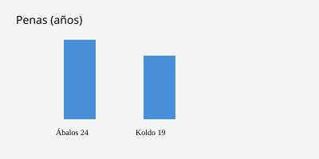

España · Tribunales · 14 de octubre de 2026
El Tribunal Supremo confirma las condenas de Ábalos y Koldo García

Lo que está acordado entre redacciones
La Sala de lo Penal del Tribunal Supremo desestimó el 14 de octubre de 2026 los incidentes de nulidad de actuaciones presentados por el exministro de Transportes José Luis Ábalos y su exasesor Koldo García contra la sentencia dictada en junio. Aquella sentencia les impuso penas de 24 años de prisión a Ábalos y 19 años a Koldo García por los delitos de organización criminal, cohecho, malversación de caudales públicos y tráfico de influencias en el conocido como caso mascarillas. El auto es unánime. Con la desestimación se agota la vía ordinaria y queda abierta la posibilidad de interponer recursos de amparo ante el Tribunal Constitucional. El empresario Víctor de Aldama fue condenado a cuatro años y medio, con atenuante de colaboración, y no ingresó en prisión por esa causa.
Europa Press, Cadena SER y El Mundo coinciden en las penas, en la desestimación de los incidentes y en la apertura de la vía constitucional. La Fiscalía Anticorrupción había solicitado la desestimación por considerar que los escritos reiteraban cuestiones ya resueltas en la sentencia.
Lo que es solo una cita o alegación
Las defensas alegaron vulneraciones de derechos fundamentales: haber sido juzgados en el Supremo, la situación de prisión provisional durante el juicio, o la falta de acceso a determinados dispositivos. El auto descarta esas alegaciones. Las declaraciones de los condenados o de sus abogados sobre la justicia de la sentencia son alegaciones de parte, no hallazgos del tribunal. Cualquier valoración política sobre el impacto en el PSOE o en la campaña electoral es opinión de los comentaristas, no un hecho del auto judicial.
Mecanismo e historia
El caso mascarillas investigó contratos de urgencia adjudicados al inicio de la pandemia de COVID-19 por organismos del Ministerio de Transportes y entidades vinculadas para la compra de mascarillas. La investigación acreditó, según la sentencia de junio, irregularidades en la adjudicación de contratos por unos 13 millones de euros a una empresa relacionada con Aldama, junto con pagos mensuales, contrataciones de personas vinculadas y arrendamientos. Ábalos fue descrito en la valoración de los magistrados como “el jefe” de la trama por su autoridad institucional. Koldo actuó como asesor e intermediario.
El incidente de nulidad es un remedio excepcional dentro del propio tribunal, previo a cualquier amparo constitucional. Su desestimación no revisa el fondo de la prueba; señala que los motivos alegados ya fueron examinados o no encajan en el objeto de ese recurso. El recurso de amparo ante el Tribunal Constitucional examina posibles vulneraciones de derechos fundamentales, no una nueva valoración de los hechos. Hasta que se presente y se admita, las condenas permanecen firmes en la vía ordinaria.
Lo que la historia no es
La confirmación no es una nueva condena ni un nuevo juicio. No determina el resultado de un eventual amparo. No es una declaración sobre la culpabilidad o inocencia de otras personas no condenadas en esta causa. Tampoco es un hecho electoral; cualquier efecto en las listas o en el discurso de los partidos es una consecuencia política separada del contenido del auto.

Artículos de fuente y puntuaciones
Crédito de imagen: Wikimedia Commons File:Fachada_-_Tribunal_Supremo_de_Espana_-_Madrid_06.jpg (licencia en la página del archivo). Fallback SVG local en images/.